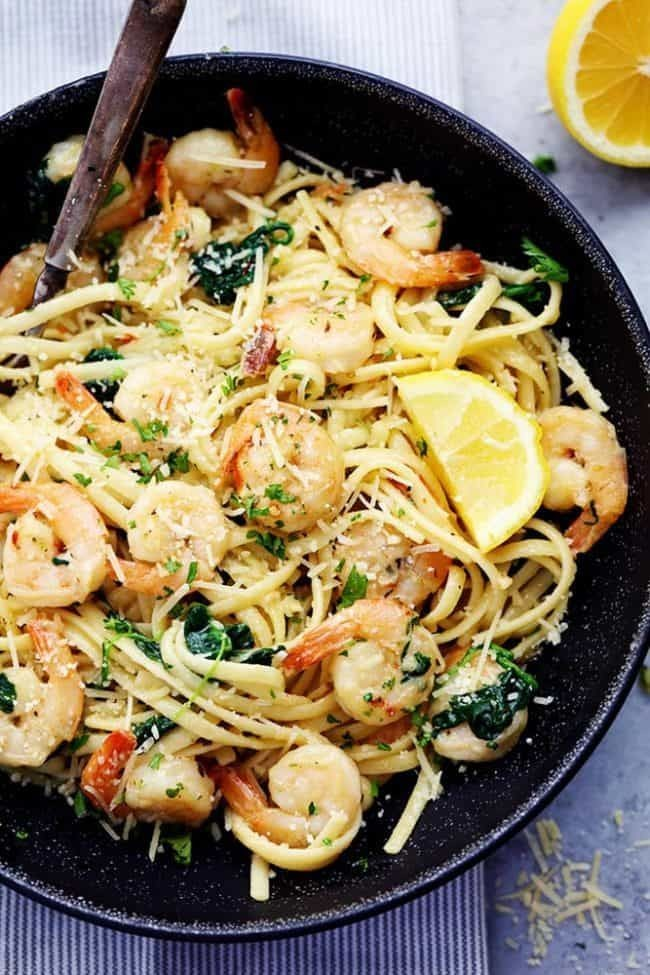

Description :
Quick to cook with a rich bouquet of flavors. ideal for both ordinary days and celebrations.
Ingredients list
- linguine (225 g)
- 2 tablespoons olive oil
- 8 tablespoons unsalted butter, 1 stick
- 4 cloves garlic, minced
- 1 teaspoon red pepper flakes
- large shrimp (570 g)
- salt, to taste
- pepper, to taste
- 1 teaspoon dried oregano
- 4 cups baby spinach (160 g)
- parmesan cheese (25 g), grated
- 2 tablespoons fresh parsley, chopped
- 1 tablespoon lemon juice
Steps for cooking recipe
- In a large pot, boil water and add pasta. Cook (stirring frequently) until al dente.
- Drain and set pasta aside.
- In the same pan, heat olive oil and 2 tablespoons of butter.
Add garlic and crushed red pepper, cook until fragrant.
- Toss in shrimp, salt and pepper to taste,
and stir until shrimp start to turn pink, but are not fully cooked.
- Add oregano and spinach, cook until wilted.
- Return cooked pasta to the pot, add remaining butter,
parmesan, and parsley. Stir until well mixed and the butter is melted.
- When the shrimp are cooked, add lemon juice, mix once more, then serve while hot.
Return to top
To main page